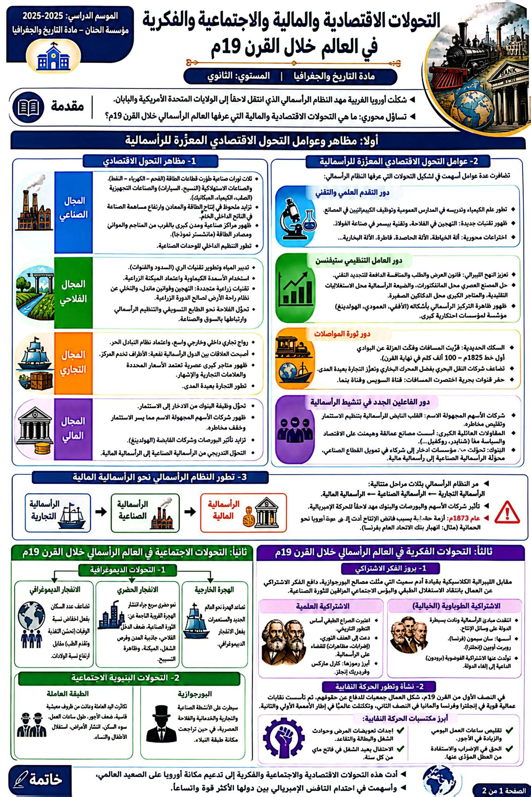

2025 / 2026
التحولات الاقتصادية والمالية والاجتماعية والفكرية في العالم الرأسمالي خلال القرن 19م
الدرس الثاني · التاريخشكلت أوروبا الغربية مهد النظام الرأسمالي الذي انتقل إلى الولايات المتحدة الأمريكية واليابان. وقد عرف العالم الرأسمالي خلال القرن 19م تحولات عميقة مسّت القطاعات الاقتصادية (الصناعة والفلاحة والتجارة والمال) بفضل التقدم التقني والتنظيمي، مما أدى إلى بروز الرأسمالية المالية، ورافق ذلك نمو ديموغرافي وحضري وظهور طبقات اجتماعية متناقضة مهّدت لبروز الفكر الاشتراكي والحركة النقابية.
ما مظاهر التحولات الاقتصادية والمالية التي عرفها العالم الرأسمالي خلال القرن 19م؟ وما العوامل المفسّرة لها؟ وما انعكاساتها الاجتماعية والفكرية؟
- توالي ثلاث ثورات صناعية طوّرت قطاع الطاقة (الفحم، الكهرباء، النفط).
- تطور الصناعات الاستهلاكية (النسيج، السيارات) ثم التجهيزية (الفولاذ، الميكانيك، الكيمياء).
- تزايد إنتاج الطاقة والمعادن وارتفاع مساهمة الصناعة في الناتج الداخلي.
- ظهور مراكز صناعية ومدن كبرى قرب المناجم والموانئ (منشستر نموذجًا).
- تدبير المياه وتطوير تقنيات الري (السدود والقنوات).
- استعمال الأسمدة الكيماوية واعتماد المكننة.
- تقنيات جديدة (التهجين، قوانين ماندل) والدورة الزراعية بدل استراحة الأرض.
- فلاحة تسويقية رأسمالية مرتبطة بالسوق والصناعة.
- اعتماد نظام التبادل الحر وانتعاش التجارة البعيدة المدى.
- علاقات نفعية بين البلدان الرأسمالية (الأطراف تخدم المركز).
- ظهور متاجر كبرى عصرية على مستوى التجارة الداخلية.
- أساليب جديدة: الأسعار المحددة، الماركات المسجلة، الإشهار.
- تحول وظيفة الأبناك من الادخار إلى الاستثمار.
- انتشار الشركات المجهولة الاسم التي يسّرت الاستثمار وخفّفت مخاطره.
- تزايد أهمية البورصات.
- تحوّل تدريجي من الرأسمالية الصناعية إلى الرأسمالية المالية.
- تطور العلوم، خصوصًا علم الكيمياء، وأثره في الإنتاج والنقل والتسويق.
- ظهور تقنيات جديدة كالتهجين في الفلاحة وتقنية بيسمر في صناعة الفولاذ.
- اختراعات محورية: آلة الخياطة، الآلة الحاصدة، الدينامو، قاطرة ستيفنسن.
- اعتماد النهج الليبرالي وقانون العرض والطلب والمنافسة.
- ظاهرة التركيز الرأسمالي بأشكالها (الأفقي، العمودي، الهولدينغ).
- حلول المصنع العصري محل المانيفكتورة، والضيعة الرأسمالية والمتاجر الكبرى محل الأشكال التقليدية.
- تطور السكك الحديدية وفك العزلة عن البوادي (أول خط سنة 1825م).
- قفزة في النقل البحري بفضل المحرك البخاري.
- حفر القنوات البحرية (السويس وبنما) واختراع التلغراف.
- الشركات المجهولة الاسم: القلب النابض للرأسمالية.
- المقاولات العائلية الكبرى التي طوّرت الصناعة ونفذت إلى الاقتصاد والسياسة.
- الأبناك التي غيّرت وظيفتها وصارت تموّل القطاع الصناعي.
بعد الرأسمالية التجارية ثم الصناعية، تحولت الدول الصناعية نحو الرأسمالية المالية بفضل الشركات المجهولة الاسم والبورصات والأبناك، وهو ما مهّد لاحقًا للحركة الإمبريالية.
شهدت سنة 1873م أزمة حقيقية للنظام الرأسمالي بسبب فائض الإنتاج، فعادت أوروبا إلى سياسة الحمائية.
- تضاعف عدد السكان لانخفاض الوفيات (تحسن التغذية والطب والتلقيح) وارتفاع الولادات.
- نمو حضري سريع بفعل الهجرة القروية الناتجة عن الثورة الصناعية وضعف الدخل الفلاحي.
- تزايد نفوذ البورجوازية (أصحاب الشركات والتجار الكبار) وسيطرتها على الاقتصاد والسياسة.
- تراجع مكانة النبلاء وتحوّل بعضهم إلى بورجوازيين.
- تكاثر الطبقة العاملة ومعاناتها من ظروف قاسية (ضعف الأجور، طول العمل، السكن غير اللائق، استغلال الأطفال والنساء).
- انتقدت الرأسمالية ونادت بسيطرة الدولة على وسائل الإنتاج (سان سيمون، روبرت أوين).
- تولّدت عنها الاشتراكية الفوضوية (برودون).
- اعتبرت الصراع الطبقي أساس التطور التاريخي.
- دعت إلى العنف الثوري لإقامة النظام الاشتراكي (كارل ماركس).
- تأسيس نقابات قوية تكتّلت عالميًا في إطار الأممية الأولى والثانية.
- تحقيق مكتسبات: تقليص ساعات العمل، الزيادة في الأجور، التعويضات، وحق الإضراب.
استخرج من معطيات الدرس دور التقدم العلمي والتقني في تعزيز النظام الرأسمالي خلال القرن 19م.
لوحتان تلخّصان الدرس بصريًا، مستخرَجتان من كتيب الدروس والتمارين للأستاذ أحمد بوعمود:

{kind=link}
{kind=link}
أدت التحولات الاقتصادية والمالية والاجتماعية والفكرية التي عرفها العالم الرأسمالي خلال القرن 19م إلى تدعيم مكانة أوروبا وترسيخ الرأسمالية المالية، وأسهمت في احتدام التنافس الإمبريالي بين الدول الأكثر قوة واتساعًا، وهو ما سيقود لاحقًا إلى اندلاع الحرب العالمية الأولى.